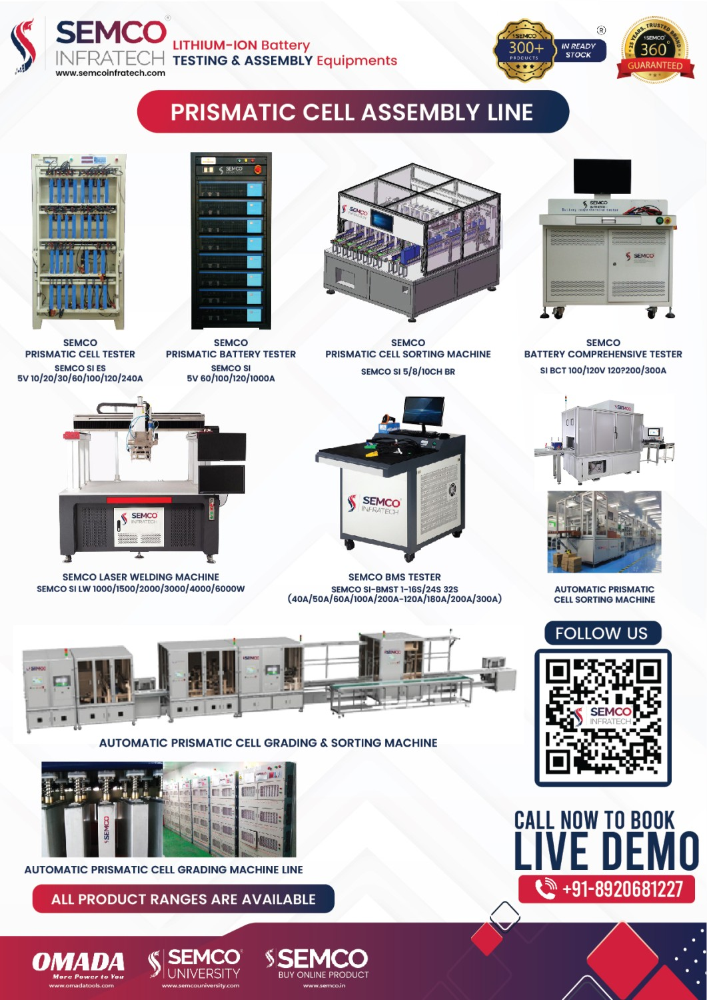
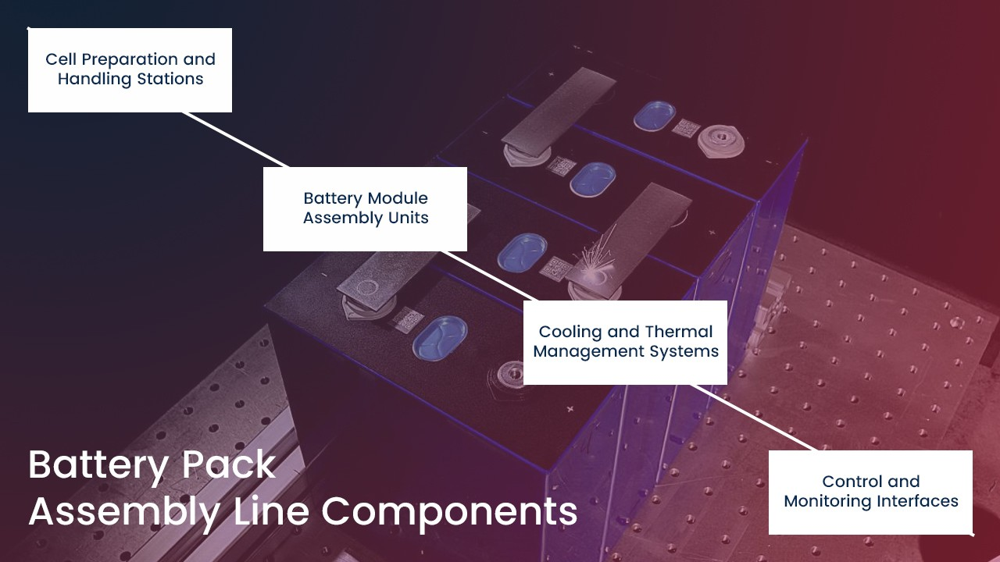
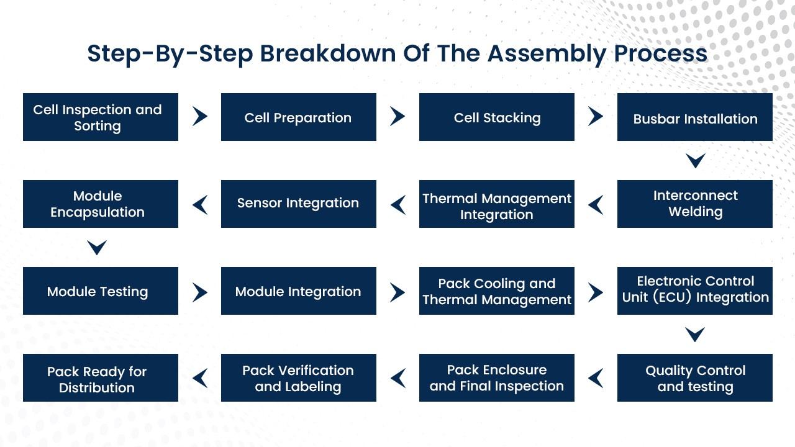
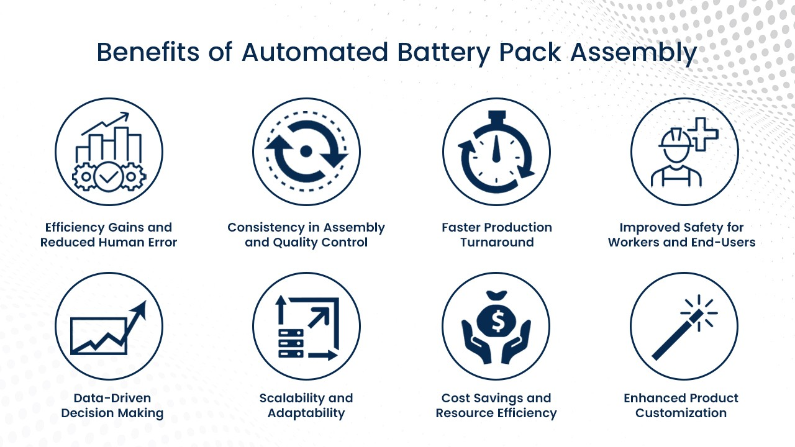
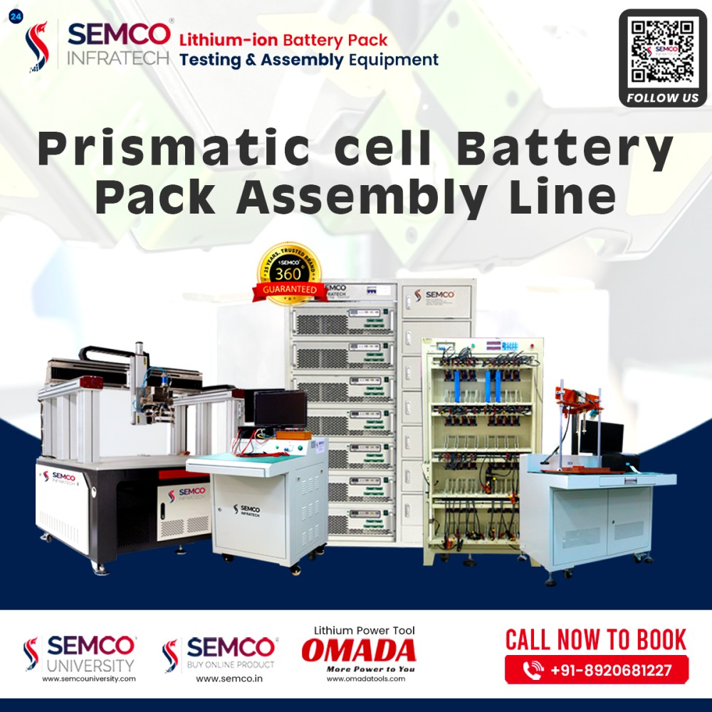

Significance of battery pack assembly in the energy storage industry
The battery pack assembly process stands as a cornerstone within the energy storage industry, representing the pivotal juncture where individual battery cells metamorphose into powerful and functional energy reservoirs. It is through this intricate assembly process that the potential of these cells is harnessed, transforming them into efficient, reliable, and high-performance energy storage solutions.
The precision, attention to detail, and technological innovation invested in battery pack assembly directly influence the overall functionality, longevity, and safety of energy storage systems. As the energy landscape seeks sustainable alternatives, the significance of battery pack assembly becomes even more pronounced, shaping the trajectory of not just energy storage, but also influencing the larger transition toward cleaner, greener, and more resilient power solutions.
Introduction to the advanced battery pack assembly line
The advanced battery pack assembly line represents the epitome of modern engineering prowess and efficiency in the energy storage industry. This state-of-the-art assembly line seamlessly integrates cutting-edge automation, precision robotics, and meticulous quality control processes to orchestrate the transformation of individual battery components into fully functional and robust energy storage systems. Characterized by its synchronized orchestration and streamlined operations, this assembly line ensures the flawless integration of battery cells, thermal management systems, electronics, and safety features. Its adaptive design caters to various battery chemistries, sizes, and configurations, providing a versatile platform to cater to the dynamic needs of the energy storage sector. As technology propels the energy landscape toward greener and more sustainable solutions, the advanced battery pack assembly line stands as a beacon of innovation, delivering reliable, high-performance energy storage systems that contribute to a more resilient and eco-friendly future.
Importance of efficient and precise assembly for battery performance
Efficiency and precision in battery assembly stand as the bedrock of optimal battery performance and longevity. The intricate synergy of battery components demands meticulous assembly to ensure seamless functionality. A slight misalignment or inadequately secured component can lead to reduced energy output, compromised safety, and shorter battery lifespans. Efficient assembly processes minimize the risk of defects, ensuring consistent performance across batteries. Precision in alignment, attachment, and sealing guarantees the prevention of leakages, short circuits, and other potential hazards. As batteries power critical systems in various industries, from electric vehicles to renewable energy storage, their reliability is paramount. Only through efficient and precise assembly can batteries fulfill their potential and stand as dependable sources of energy, driving technological advancement and sustainable solutions.
Integration of automation, precision, and technology
The assembly of battery packs has evolved into a realm where automation, precision, and cutting-edge technology converge, shaping a new paradigm in manufacturing excellence. Automation streamlines repetitive tasks, expediting the process while minimizing human errors. State-of-the-art robotics and intelligent conveyance systems work seamlessly to assemble intricate components with unprecedented accuracy.

Precision is no longer a goal but an inherent attribute, achieved through advanced sensors, computer-guided machinery, and meticulous quality checks at every stage. This integration of automation and precision doesn't just expedite production; it elevates the overall quality of battery packs. Moreover, technology's role is pivotal, with AI-driven algorithms orchestrating the assembly process, real-time monitoring ensuring adherence to tolerances, and data analytics guiding continuous improvements. The synthesis of these elements catapults battery pack assembly lines into an era of unparalleled efficiency, flawless execution, and groundbreaking innovation.
Essential components involved in battery pack assembly
Battery pack assembly is a sophisticated process that involves a symphony of essential components, each contributing to the final product's performance and reliability. Starting with the battery cells themselves, carefully chosen based on chemistry and capacity, these units are the building blocks of the pack. Thermal management systems play a crucial role in maintaining optimal operating conditions, ensuring longevity and safety. The battery management system (BMS) serves as the brain, regulating charging and discharging, managing cell balance, and preventing overcharging or overheating. Wiring harnesses and connectors ensure seamless communication between components, while safety mechanisms such as fuses and insulation materials protect against potential hazards. The mechanical housing provides structural integrity and shields the cells from external impacts. Finally, intelligent software orchestrates the interplay between these components, enabling efficient charging, discharging, and monitoring. The amalgamation of these diverse elements forms a battery pack that's not just a sum of its parts but an intricate masterpiece of engineering, reliability, and innovation.
Battery Pack Assembly line components and their functions

Cell Preparation and Handling Stations:
These stations serve as the starting point for the battery pack assembly process. Here, battery cells are carefully inspected, sorted, and prepared for integration into the pack. Quality control measures are employed to ensure that only cells meeting specified criteria are used. Cells are tested for voltage, capacity, and internal resistance. Any defective cells are identified and discarded. This stage is critical for ensuring that the pack's overall performance and reliability are not compromised by faulty or subpar cells.
Battery Module Assembly Units:
The heart of the battery pack assembly line, these units focus on the arrangement and connection of individual cells to form a complete battery module. Precision is key, as the cells must be aligned and connected accurately to ensure optimal electrical and thermal performance. Automated machinery often handles tasks such as cell stacking, busbar installation, and welding connections. Ensuring a consistent and reliable module assembly is essential to the pack's overall efficiency and safety.
Cooling and Thermal Management Systems:
Battery cells generate heat during charging and discharging, and managing this heat is crucial to maintain safe operating temperatures and extend the battery's lifespan. Cooling and thermal management systems, such as cooling plates, heat exchangers, and liquid cooling loops, are integrated into the assembly line. These systems help dissipate excess heat and maintain consistent temperature profiles across the battery pack. Efficient thermal management prevents overheating, thermal runaway, and cell degradation, ensuring optimal performance over the pack's lifespan.
Control and Monitoring Interfaces:
In the age of smart technology, control, and monitoring interfaces are essential components of a modern battery pack assembly line. These interfaces allow operators to configure, calibrate, and monitor the assembly process in real time. They provide insights into the quality of the assembly, and any deviations from predefined parameters, and enable prompt corrective actions. Real-time monitoring contributes to the consistency, accuracy, and quality control of the battery pack assembly, ultimately enhancing its performance and reliability.
These four components play a pivotal role in the battery pack assembly process, collectively contributing to the creation of a high-performance, reliable, and efficient energy storage solution. The interplay of precision machinery, advanced thermal management, quality control measures, and intelligent monitoring ensures that the final battery pack meets stringent performance, safety, and durability standards.
Step-by-step breakdown of the assembly process
The battery pack assembly process is a carefully orchestrated sequence of steps that transforms individual battery cells into a functional and reliable energy storage solution. Here's a step-by-step breakdown of this intricate process:

Cell Inspection and Sorting:
The process begins with a thorough inspection and sorting of individual battery cells. Cells are examined for physical defects, voltage variations, capacity, and internal resistance. Defective cells are discarded to ensure that only high-quality cells are used in the assembly.
Cell Preparation:
Selected cells are prepared for assembly, which may involve cleaning, terminal preparation, and attaching insulation materials to prevent electrical shorts.
Cell Stacking:
Cells are stacked in a precise arrangement to form a battery module. This stacking pattern is carefully determined to optimize electrical connections and thermal management.
Busbar Installation:
Busbars, which are conductive strips, are installed between cells to establish electrical connections. These busbars ensure that cells are connected in series or parallel configurations according to the pack's design.
Interconnect Welding:
Using laser welding technology or other precise welding methods, interconnections between cells and busbars are established. This ensures low-resistance pathways for current flow and guarantees electrical continuity.
Thermal Management Integration:
Thermal management components, such as cooling plates or liquid cooling channels, are integrated into the module to regulate the temperature of the cells during operation. Efficient thermal management prevents overheating and ensures uniform cell temperature distribution.
Sensor Integration:
Temperature sensors and voltage sensors are integrated into the module to monitor individual cell conditions. These sensors provide crucial data for thermal management and overall battery performance optimization.
Module Encapsulation:
The assembled module is encapsulated using protective materials like thermal conductive adhesives, insulation films, and impact-resistant coverings. This encapsulation enhances safety and protects the cells from external elements.
Module Testing:
Each module undergoes a battery of tests to ensure its electrical performance, thermal stability, and overall reliability. These tests may include capacity measurements, cycle testing, thermal profiling, and safety assessments.
Module Integration:
Multiple modules are integrated to form the final battery pack, maintaining appropriate electrical connections and thermal equilibrium.
Pack Cooling and Thermal Management:
The assembled battery pack is integrated with advanced cooling and thermal management systems, which ensure that heat generated during charging and discharging is efficiently dissipated to prevent overheating.
Electronic Control Unit (ECU) Integration:
The pack's ECU, often equipped with intelligent algorithms, is integrated to manage and balance the charge across individual cells or modules, ensuring optimal performance and longevity.
Quality Control and Testing:
The fully assembled battery pack undergoes rigorous quality control and testing procedures, including performance evaluations, safety tests, and functional checks. Any deviations or defects are identified and addressed.
Pack Enclosure and Final Inspection:
The battery pack is enclosed in a protective casing, designed to withstand environmental factors and potential impacts. A final inspection ensures that the pack meets safety standards and specifications.
Pack Verification and Labeling:
Each battery pack is verified against its specifications and is labeled with essential information, including model number, production date, and safety certifications.
Pack Ready for Distribution:
With successful verification and labeling, the battery pack is ready for distribution and deployment in various applications, from electric vehicles to grid energy storage systems.
The step-by-step assembly process ensures that the battery pack is not only functional but also safe, reliable, and optimized for performance, making it an essential component in the modern energy storage industry.
Benefits of Automated Battery Pack Assembly
Automated battery pack assembly offers a range of benefits that significantly enhance the efficiency, quality, and safety of the entire production process. Here are the key advantages of incorporating automation into battery pack assembly:

Efficiency Gains and Reduced Human Error:
Automated assembly processes are meticulously programmed and executed by machines, eliminating the variability and inconsistencies that can arise from human involvement. This precision minimizes the risk of errors in cell placement, welding, and other critical tasks. The result is a streamlined production process with higher throughput and reduced rework, leading to improved overall efficiency.
Consistency in Assembly and Quality Control:
Automation ensures a consistent and uniform approach to assembling battery packs. Machines follow predefined patterns and parameters, ensuring that each module is assembled according to the exact specifications. This level of consistency directly translates to higher product quality and reliability, reducing the chances of defects or deviations.
Faster Production Turnaround:
Automated assembly lines are designed for high-speed, continuous production. Tasks that would be time-consuming for humans are executed swiftly by machines. This accelerated production pace translates to shorter lead times and increased output capacity, meeting market demands effectively.
Improved Safety for Workers and End-Users:
Automated assembly minimizes the exposure of workers to potentially hazardous processes, such as welding and handling of volatile materials. This enhanced safety extends to the end-users of the battery packs, as the automation process ensures precise and secure connections that reduce the risk of malfunction or accidents during usage.
Data-Driven Decision Making:
Automated assembly lines often include data collection and monitoring systems that track various aspects of the process. This data can be analyzed to identify bottlenecks, optimize workflows, and enhance overall performance. It enables manufacturers to make informed decisions for continuous process improvement.
Scalability and Adaptability:
Automated systems are designed to be scalable, allowing manufacturers to increase production volumes without significantly altering the process. Additionally, automated systems can be adapted to accommodate changes in battery pack designs, allowing for flexibility in product offerings.
Cost Savings and Resource Efficiency:
While the initial investment in automated assembly equipment may be higher, the long-term benefits include reduced labor costs, minimized rework, and optimized resource utilization. As automation decreases the likelihood of errors and rejections, manufacturers save on material costs and improve overall resource efficiency.
Enhanced Product Customization:
Automated systems can be easily reprogrammed to accommodate various battery pack configurations, facilitating the production of customized solutions to meet specific customer requirements. This flexibility allows manufacturers to cater to diverse market needs.
Semco Battery Pack Assembly Line
The Semco Battery Pack Assembly Line represents a cutting-edge and comprehensive solution that embodies the pinnacle of innovation and efficiency in the energy storage industry. This state-of-the-art assembly line is meticulously engineered to address the intricate demands of battery pack production, ensuring seamless integration, superior quality, and unmatched performance.

At the heart of the Semco Battery Pack Assembly Line lies a dedication to excellence through automation and precision. Every step of the assembly process is choreographed with precision and meticulously executed by advanced robotics and machinery that eliminate human error and inconsistency. This level of automation translates to not only heightened efficiency but also a remarkable reduction in production time.
The assembly line's core components, including Cell Preparation and Handling Stations, Battery Module Assembly Units, Cooling and Thermal Management Systems, and Control and Monitoring Interfaces, work in harmonious synchrony. The line's intelligent layout enables a seamless transition from one phase to the next, promoting a streamlined workflow and optimal resource utilization.
Incorporating cutting-edge technology, the Semco Battery Pack Assembly Line ensures that each battery pack is assembled to the highest industry standards. Precision laser welding and intricate module assembly processes are executed flawlessly, guaranteeing the utmost structural integrity and electrical connectivity of the final product.
One of the standout features of the Semco Assembly Line is its versatility. The line can be easily adapted to accommodate various battery pack configurations, allowing for unmatched customization to meet diverse customer needs. This adaptability ensures that the line remains future-proof, ready to cater to evolving market demands and battery technologies.
Furthermore, the integration of advanced control and monitoring interfaces empowers manufacturers with real-time insights into the assembly process. This data-driven approach not only enhances quality control but also facilitates informed decision-making, leading to continuous process improvements.
Safety, a paramount concern, is diligently addressed through the Semco Assembly Line's advanced safety features. These measures mitigate risks to both workers and end-users, ensuring that the final battery packs are not only high-performing but also reliable and secure.